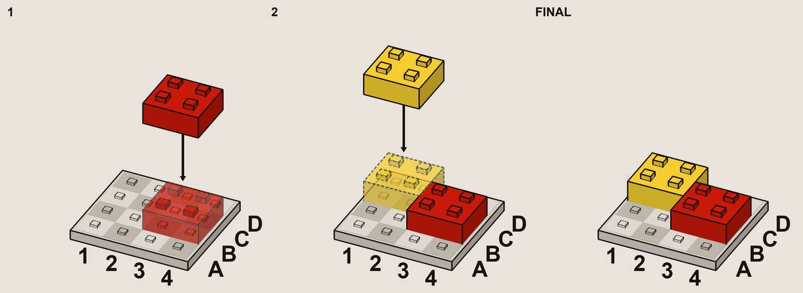

Shaperotating
It's no secret that models today are great at text-based tasks. I wanted to find out what it would take to get models to improve spatial reasoning. I'll explain how I tried to use RLVR, tinker, Nemotron and Qwen to try to develop these capabilities.

I've managed to achieve some partial success: with post-training through tinker and custom RLVR envs, I improved Qwen 3.6 performance on a version of this task with three turns from a performance of below 10% to success on over 80% of trials. To ensure memorization wasn't the cause of the performance, I made sure in each training step during GRPO, seeds would be randomized.
Lesson 1: text is not suitable
Text has a lot of advantages over images. But in my testing it wasn't suitable. At first I experimented with dungeon/game setups:
- TextWorld
- ScienceWorld
- My own implementation of dungeons with fog of war
However these weren't as close to the skill of "spatial reasoning" as I wanted. Next, I tried instead something closer to pure "shape rotation". The models would have to distinguish 3d shapes out of a set of candidates.
Original A B C
######
## ### ## ###########
## ### ## ###########
###
###
ASCII art turned out to be the wrong medium. Even at the simplest difficulty, models like Nemotron 30B couldn't understand it.
The fix: stop trying to draw pictures in text. My next attempt dropped the drawing entirely in favor of describing the shape explicitly.
Lesson 2: always try to figure out the root cause
Eventually I tried switching to a more understandable view, with a matrix-like API where the model can see which cells are occupied or not under a given projection:
[+x] row0: .# row1: ## [+y] row0: ##. row1: .## [+z] row0: ..# row1: ###
Testing with claude 4.8 reveals that this problem, though hard, is still solvable. It managed to successfully determine equivalent shapes with near 100% accuracy. However, training with Nemo, training stalled.
The fix: make sure to look at failing rollouts, especially when training stalls. It can reveal issues that reward curves by themselves can't catch.

Looking at the scores of individual seeds, a clear pattern begins to emerge. The eight seeds are split nearly perfectly in half between two categories: 70-100% pass rate, and 0-30% pass rate. Investigating further reveals the source of the issue. In this specific ruleset, I had given Nemo the ability to look at only one projection axis per tool call. For some reason, Nemo learned to always look along the +x axis. For some seeds, this immediately yielded two identical shapes. These are the seeds with high pass rates. For other seeds, the single view wasn't enough. In the worst case (the cyan colored seed) four out the five shapes look identical.
The pass rate for the entire problem set was deceptive here, because testing individual problems would've revealed that most are either ~0% or ~100% pass rate, which doesn't provide any gradient for GRPO to work with.
Lesson 3: Don't try to patch reward hacking with the system prompt
Looking at the failure from before, it might seem like changing the system prompt could solve this issue. However, solving reward hacking (which this is) is not the right layer to solve the problem at. In testing, I found a lot of problems that were defeatable by some variant of reward-hacking or memorization. In all cases, changing the system prompt didn't solve the issue, worse, the model learns to lend less credence to the system prompt!
Lesson 4: keep difficulty progression small & incremental
Because text and ASCII were dead ends, at this point I decided to add image support to the pipeline. This involved adding a new schema option to our env format, as well as handling different image formats for each provider. This also necessitated a migration from Nemotron to a multi-modal model - specifically Qwen 3.6, as tinker's Nemo didn't support image input. The PR merged after review and made the below experiments possible.
My first attempt with images was again shape rotation. The model would be given a reference shape, and a second shape to rotate. The problem was that at difficulty one I made the solution a rotation along a single axis. On training, this proved nearly trivial: the model could pretty reliably learn to gather observations and rotate on small increments. However, bumping this up to the full 3 degrees of freedom was way too difficult! The behaviors didn't transfer at all.
Lesson 5: Don't let it memorize
Another task I tried to train on was one where the model would have to return the coordinates occupied.

The way to reward hack this might not be obvious at first. If you don't vary camera position between trials (azimuth, elevation) the model just learns to associate positions visually with coordinates, skipping the middle-man (axes). Testing the trained model on a held-out set with varied camera angles, accuracy dropped to nearly zero.
Lesson 6: Experiment with purpose
There's an imbalance between training time and development time. In my experience, it's easy to fall into the trap of setting off multiple hour long training runs and completely checking out. It's completely automatic, why shouldn't I? But it's worth spending more time planning each run. You have to make the result of each experiment gives you some actionable results.
For example, this means sacrificing some time to figure out the best
hyperparameters. I found that around 5e-5 produced the best results. (I
think this might be relatively high? But I also used relatively short runs for
testing, ~20-50 steps). Other things I tested:
- GRPO group and batch size (8 × 8 provides a good balance of learning & compute)
- Image label size (increased for legibility)
- Preview location, color, size, etc (model was confusing adjacent coordinates)
- Continuous difficulty scaling (smoother gradient)
- Camera azimuth & elevation
The aim is each experiment should increase the information you have access to, rather than banking on a run randomly working.
The main thing limiting me here was time. Given more time, I would've tried:
- Qwen 3.8 instead of 3.6
- Training on more foundational tasks first, like the chessboard recognition under perspective
- Per-turn scoring instead of per-rollout for finer-grained scoring
- and more...